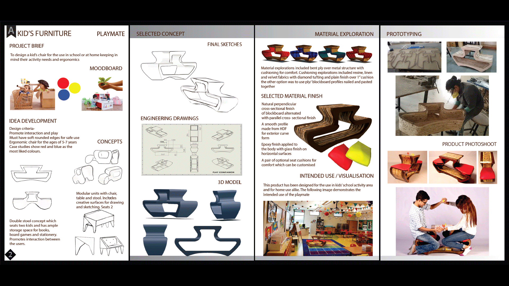
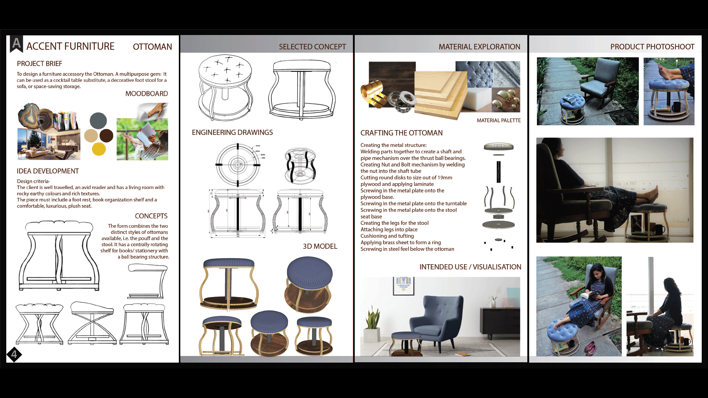
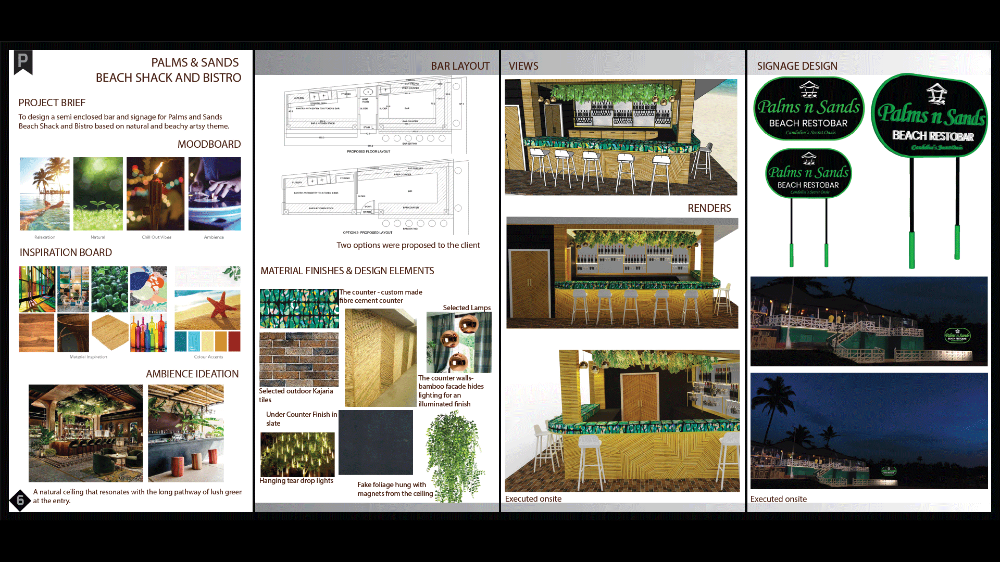
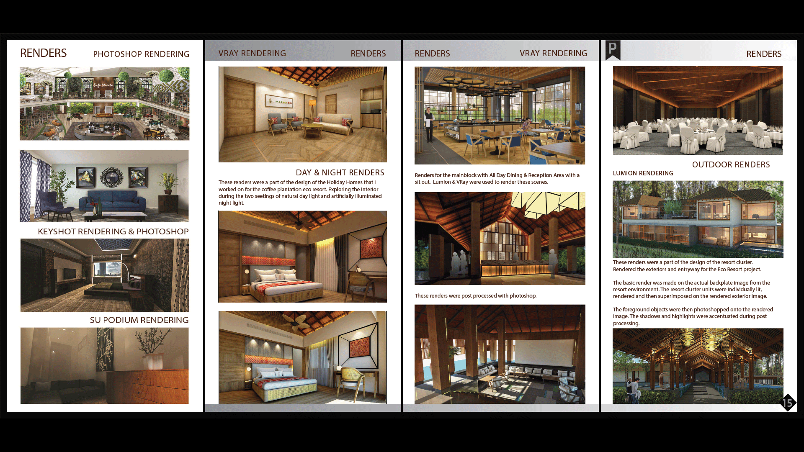

Projects
Play Mate Kids Furniture
A kid's play and activity chair. Designed for school and play areas to promote learning to work and play. For kids of ages 5 to 8
- Ergonomic design
- Storage Space for Games, Books and More
- Solid and Stable Construction
Accent Furniture
An Ottoman designed to be a multipurpose gem: It can be used as a cocktail table, a decorative foot stool, a side table with storage
- Versatile
- Chic Design
- Multipurpose
Palms & Sands Restobar
A semi- enclosed bar and signage design for Palms and Sands Beach Shack Bistro based on natural and artsy theme
- Classy Yet Natural
- Artsy Yet Functional
- Space Promotes Interaction and Transparency
Eco-Tourism Resort
Eco-tourism based project in Sakleshpura Bangalore nestled in 100 acres of coffee plantation
- Natural Delight
- Promotes Local Crafts
- A Leisurely Space To Promote Relaxation
Check Out My Other Projects
Portfolio: Click Here for My Portfolio